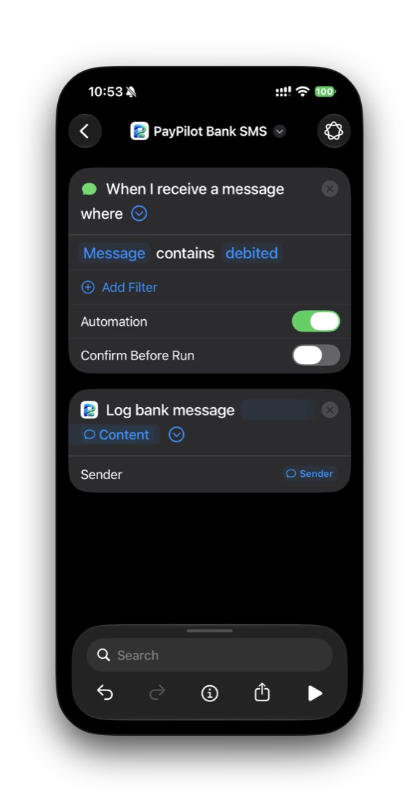
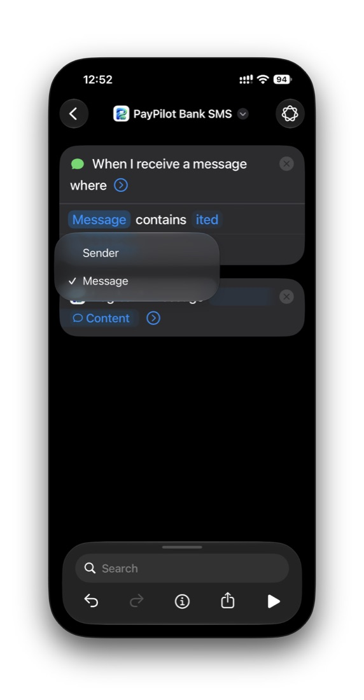
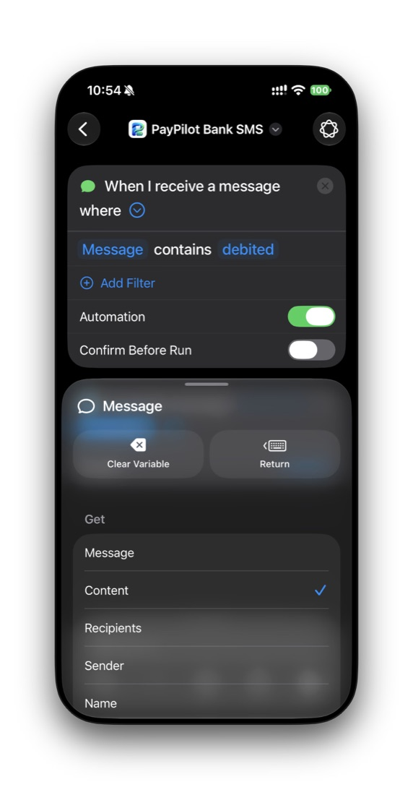
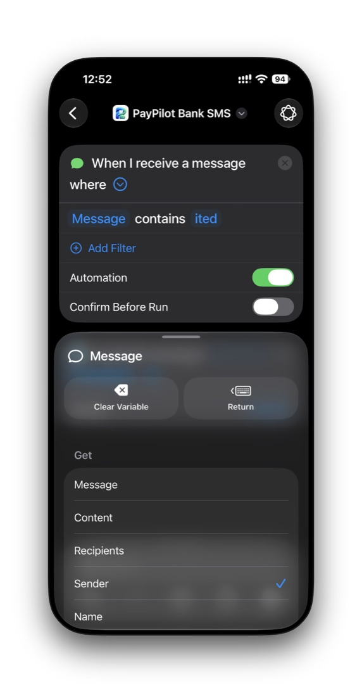
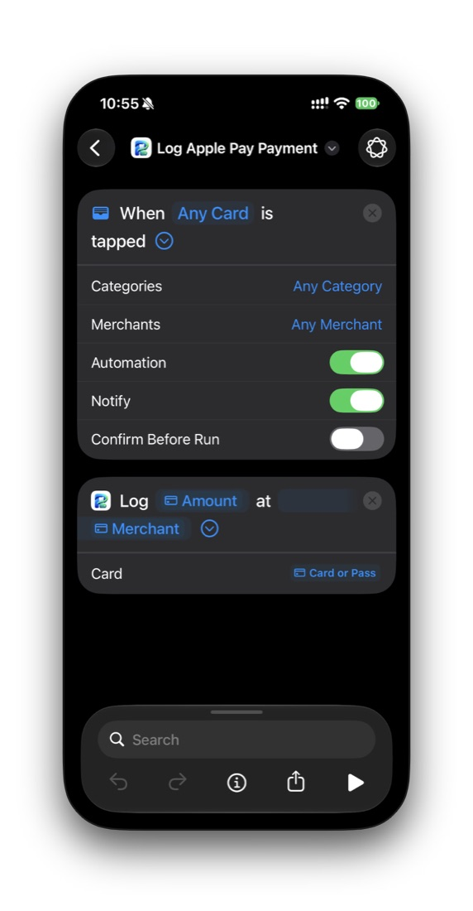

Before you start
- An iPhone with iOS 17 or later. These steps follow iOS 27; older versions look slightly different.
- PayPilot installed, and opened once while signed in, so Shortcuts knows its actions.
- About two minutes per automation. You only do this once.
Which ones do I need? Most people only need Bank SMS and Apple Pay. Add bank & UPI app notifications if your bank doesn't text you.
Bank SMS: money out and money in
One automation logs every bank text about money moving, from any bank in India or the UAE: UPI, card and transfer debits, and (with PayPilot Credit) salary, transfers received, deposits and refunds.
- Open the Shortcuts app, go to the Automation tab and tap +. If it asks “What do you want your shortcut to do?”, tap Edit instead of typing.
- Choose the trigger When I receive a message.
- Under where, set the filter to Message contains and type
ited. If the filter shows Sender, tap it and pick Message. - Tap Search at the bottom, type
Log bank messageand pick the action with the PayPilot icon. - Tap the action's message field → Select Variable → tap the message trigger → choose Content. Skip this if it already shows Content.
- Tap › on the action to show Sender → Select Variable → the trigger → Sender. This helps PayPilot recognise the bank.
- Make sure Automation is on and Confirm Before Run is off, so it runs silently. Rename it PayPilot Bank SMS and tap ‹ to save.
- That's it. Money going out is logged as an expense. Money coming in is logged as income with PayPilot Credit, and only counted without it.

ited where this shows “debited”.


Other messages with “ited”? Words like “limited” or “invited” also contain it. PayPilot reads those on your phone, sees they aren't payments, and drops them. Nothing is saved.
Card alerts with other words? A few cards say “spent” or “was used for” instead. An iPhone message automation takes one word, so if yours does, make one more copy of this automation with that word.
Apple Pay
Logs every tap with a card in Wallet at a shop.
- In Shortcuts → Automation → +, then tap Edit if asked.
- Choose the Wallet trigger When Any Card is tapped. Keep Any Card, Any Category and Any Merchant, or pick only the cards you want tracked.
- Search for
Log Apple Pay Paymentand pick the PayPilot action. - Tap Amount → Select Variable → the trigger → Amount. Do the same for Merchant → Merchant.
- Tap › to show Card → Select Variable → the trigger → Card or Pass.
- Keep Confirm Before Run off. Turn Notify off if you don't want a banner each time. Save.

Apple Pay inside apps and on websites doesn't trigger this automation. That's an iOS rule. Those payments are caught by your bank SMS or bank app automation instead.
Bank & UPI app notifications
For banks and UPI apps that notify you in their app instead of by SMS.
- Shortcuts → Automation → +, then Edit if asked.
- Choose When I receive a notification, tap from and pick your bank and UPI apps.
- Search for
Textand add the Text action. Tap inside it → Select Variable → Notification, tap the blue token and choose Title. - Press return for a new line, add Notification again and choose Body.
- Search for
Log bank message, add it, and set its message to Text. - Keep Notify off, name it PayPilot Bank Apps and save.
Check it works
- In PayPilot open Settings → Auto-capture → Test a bank message and paste a real SMS from your bank. It shows exactly what would be logged, or why not.
- After your next real payment you get a notification such as “Auto-captured ₹250.00 · Swiggy”. Tap it to check or change the category.
- Don't run these shortcuts with ▶ yourself. Without a message or payment they have nothing to log.
Troubleshooting
Nothing was logged after a payment
Check that Confirm Before Run is off and the automation is on. Make sure the SMS contains the letters in your filter (ited, as in “debited” or “credited”). Then open PayPilot once: items queued while the app was closed are added when it opens.
It asks me to “Configure Sender”
A Sender filter row was added by mistake. Tap the minus next to it to remove it. The automation only needs “Message contains …”.
The same payment appears twice
PayPilot skips repeats from SMS, app notifications and Apple Pay for the same payment. If two genuinely different payments look identical, both are kept. Delete one by swiping left in Spend.
A one-time password or promotion was logged
It shouldn't be: PayPilot ignores OTPs, offers, credits it can't confirm, and messages without an account or payment reference. If one gets through, swipe left to delete it and tell us the bank's wording (with numbers removed) so we can fix it.
Online Apple Pay isn't logged
iOS only runs the Wallet automation for taps at a shop. Online payments are picked up by your bank SMS or bank app automation.
Your privacy
- PayPilot can't open your messages. iOS only hands over the texts and notifications your automations pick: here, SMS containing “ited” (debited, credited, deposited). Anything that isn't a payment is dropped on the phone straight away.
- Messages are read on your iPhone. The text is never uploaded or sent to any server or AI, and it's deleted as soon as it's read.
- One-time passwords are recognised and thrown away immediately.
- Only the expense is kept: amount, merchant, date and the last 4 digits of the card, encrypted before backup.
- To stop, delete the automation in Shortcuts. See the privacy policy for details.
On Android
No Shortcuts are needed. Open Settings → Auto-capture in PayPilot and tap Allow notification access. PayPilot then reads payment notifications from your SMS, bank and UPI apps on the phone, and never from chats or email.